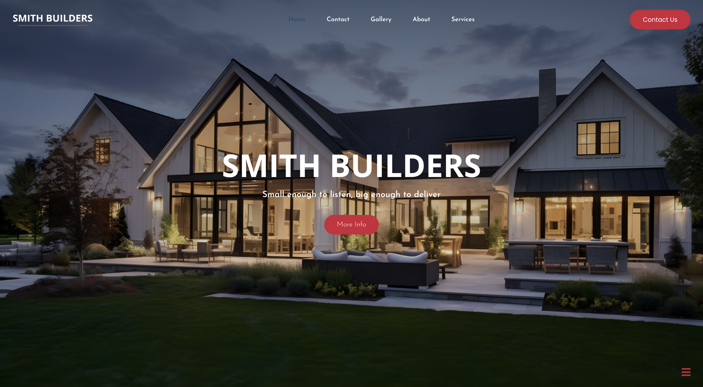
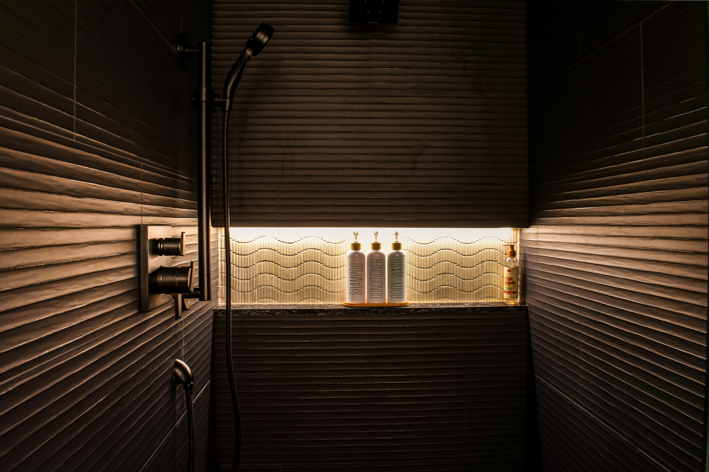
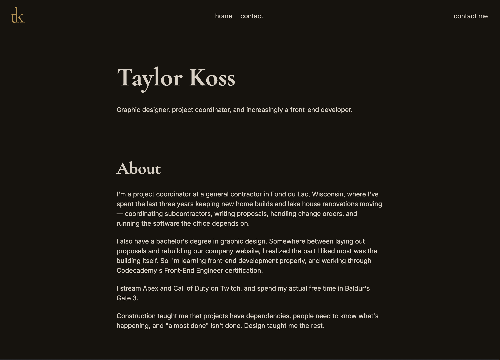

Smith Builders Website
Smith Builders had been paying an outside agency to run its website. I brought it in-house — I handle the design and build it in WordPress, our IT partner handles hosting.
 contact me
contact me
Graphic designer, project coordinator, and increasingly a front-end developer.
I'm a project coordinator at a general contractor in Fond du Lac, Wisconsin, where I've spent the last three years keeping new home builds and lake house renovations moving — coordinating subcontractors, writing proposals, handling change orders, and running the software the office depends on.
I also have a bachelor's degree in graphic design. Somewhere between laying out proposals and rebuilding our company website, I realized the part I liked most was the building itself. So I'm learning front-end development properly, and working through Codecademy's Front-End Engineer certification.
I stream Apex and Call of Duty on Twitch, and spend my actual free time in Baldur's Gate 3.
Construction taught me that projects have dependencies, people need to know what's happening, and "almost done" isn't done. Design taught me the rest.

Smith Builders had been paying an outside agency to run its website. I brought it in-house — I handle the design and build it in WordPress, our IT partner handles hosting.

I shoot and edit new builds and remodels for Smith Builders' website and social media. On site with the camera, then finished in Lightroom and Photoshop.

Designed and built from scratch in HTML and CSS — logo, type scale, and palette included — and deployed with Git and GitHub Pages.